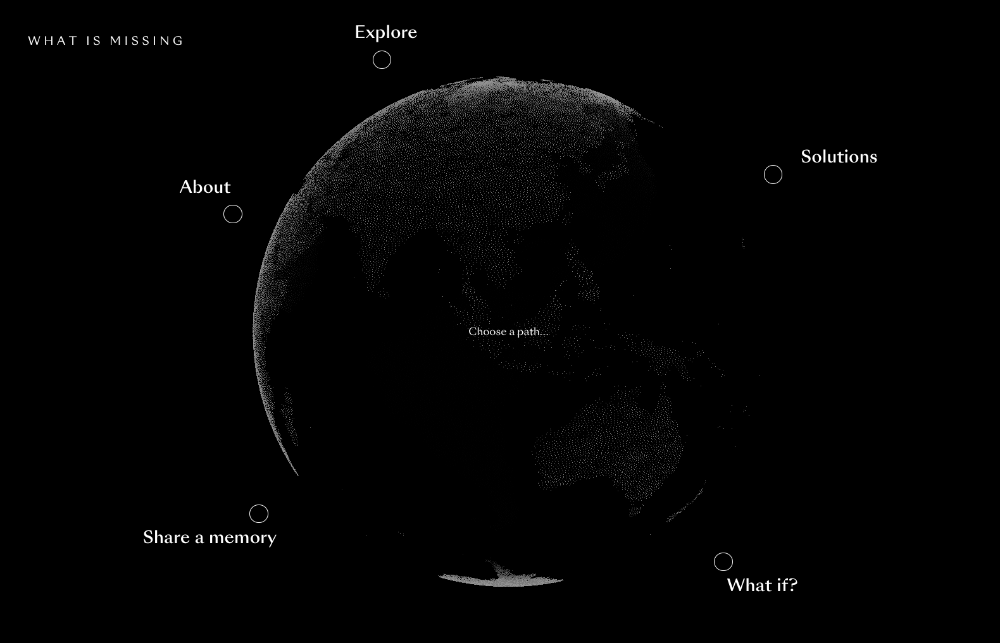
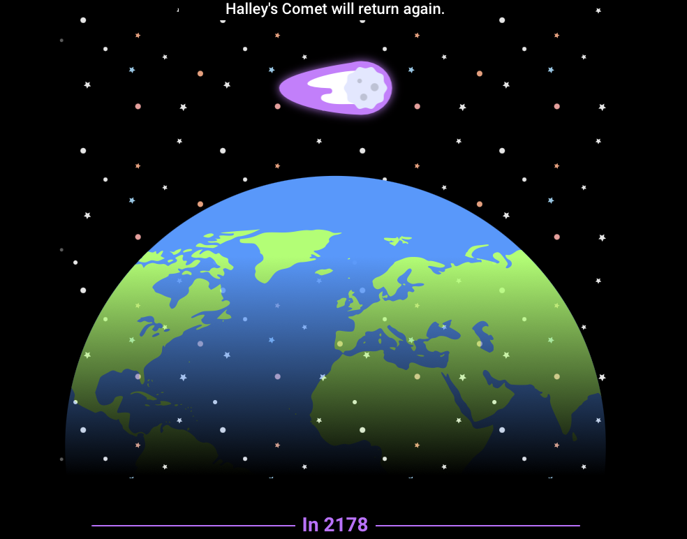

What is Missing?

What is Missing?A website that reimagines visions for a sustainable future. Information is provided to the user as they navigate through its pages and interact with the globe. The design is minimalistic yet visually engaging through its use of spot color, imagery, and animations.
Universe Forecast

Universe ForecastThis Carl Sagan inspired website has the user scroll continuously to visualize the scientific predictions for the future of the universe. The site is simple in execution, but the graphics help to portray a growing narrative that ends with an introspective ending to the timeline. The tone of the page is playful, but allows the user to think deeper about our relationship with time and space.